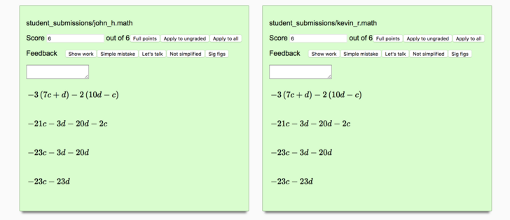

Using Free Math with Google Classroom
On your class homepage, click on an assignment where students have uploaded Free Math files as their submissions.

On the page with all of their assignments listed, click on the folder icon to bring you to the Google Drive folder that contains all of your students submissions.

Click on the arrow for the dropdown menu on the Google Drive folder.

Select "Download" to get a zip file full of all the assignments. It will take a little bit for google to generate the zip file, for a typical class under 30 students it should be less than a minute, but this scales up as you have more files. If it shows a popup warning that you are going to leave the page, you need to select "leave" to start the download.

This will give you the zip file you can load into free math for grading, see the video on the Free Math homepage for a live demo of the grading experience.

Once you finish grading, you will need to take the output file from Free Math, which is also a zip, and un-zip it locally into a folder. This is pretty straightforward on all platforms.
On a Mac, simply double click on the zip file to unzip it.
On Windows, right click on the file and select "Extract All" and follow the instructions.
On a Chrombook, open your file browser, navigate to the zip file and click on it to "mount" it. This will make it appear on the left-hand bar of the file browser similar to the experience of plugging in a USB drive. Note this must be done before you start the next step of actually uploading the files, if you do not mount it ahead of time you will not be able to select the individual files for uploading in the next step and it will just upload the whole zip file.
Back on the google drive folder with your students' assignments, select "New" and then "File Upload".

This will open a File browser, navigate to the folder you created when you unzipped the graded documents (not the original zip you downloaded with the ungraded ones.) To quickly select all of the files, click on the first file in the folder, scroll to the bottom of the list and then hold shift while clicking the last file, this will select all files between the one previously selected and the one clicked.

This warning will pop up when you submit the list of documents for uploading. The graded documents contain your students full work, along with your grades and comments. You can safely replace their original documents with your graded ones. They will be able to see your comments in context of their full work, and they can even make changes and re-submit the assignments for re-grading if desired.

We are still working on direct integrations with LMS gradebooks, so for now you will need to look at grades in Free Math using the "View Grades" button at the top of the grading page menu and manually copy over your students final grades.
Free Math is free software: you can redistribute it and/or modify
it under the terms of the GNU General Public License as published by
the Free Software Foundation, either version 3 of the License, or
(at your option) any later version.
Free Math is distributed in the hope that it will be useful,
but WITHOUT ANY WARRANTY; without even the implied warranty of
MERCHANTABILITY or FITNESS FOR A PARTICULAR PURPOSE. See the
GNU General Public License for more details.
You should have received a copy of the GNU General Public License
along with Free Math. If not, see <http://www.gnu.org/licenses/>.